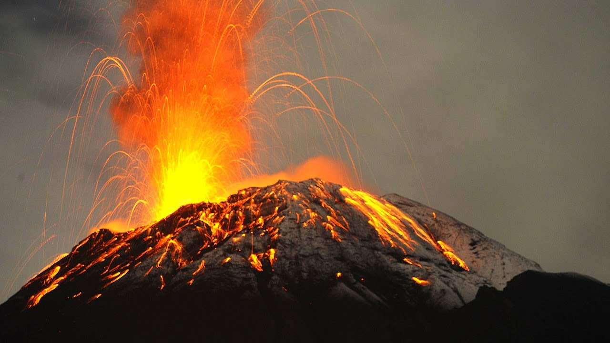

Ciekawostki o Ziemi
- Dokładnie ziemia okrąża słońsce w 23 godziny 56 minut i 4 sekundy.
- W Wenezueli znajduje się najwyższy i największy wodospad na Ziemi. Mierzy on 979 metrów i nazywa się Salto del Angel.
- Ziemia jest jedynym miejscem na całym świecie, w którym woda występuje w trzech stanach skupienia, czyli ciekłym, stałym i gazowym.
- Lasy Amazonii odpowiadają za 20% produkcji tlenu dla naszej planety.
- Ziemia w 70% jest pokryta wodą.
- Około 700 milionów lat temu, podczas epoki lodowcowej cała ziemia pokryta była lodowcem.
- Bez księżyca dni na Ziemi trchwałyby 6 godzin.
- Światło słońca dociera na ziemię po 8 minutach i 20 sekundach.
- Prawdopodobnie Ziemia jest otoczone pierścieniami, lecz ich niewidzimy bo jest ich zbyt mało
- Każdego dnia na Ziemi dochodzi do 10 erupcji wulkanicznych.
